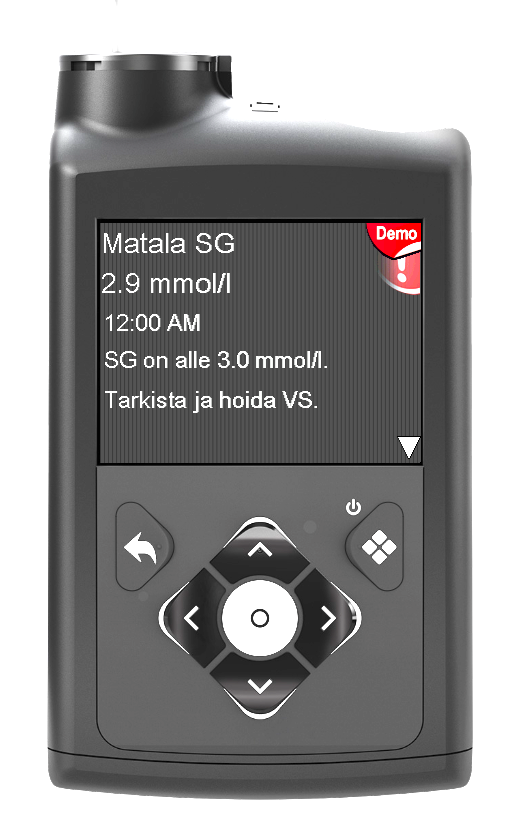
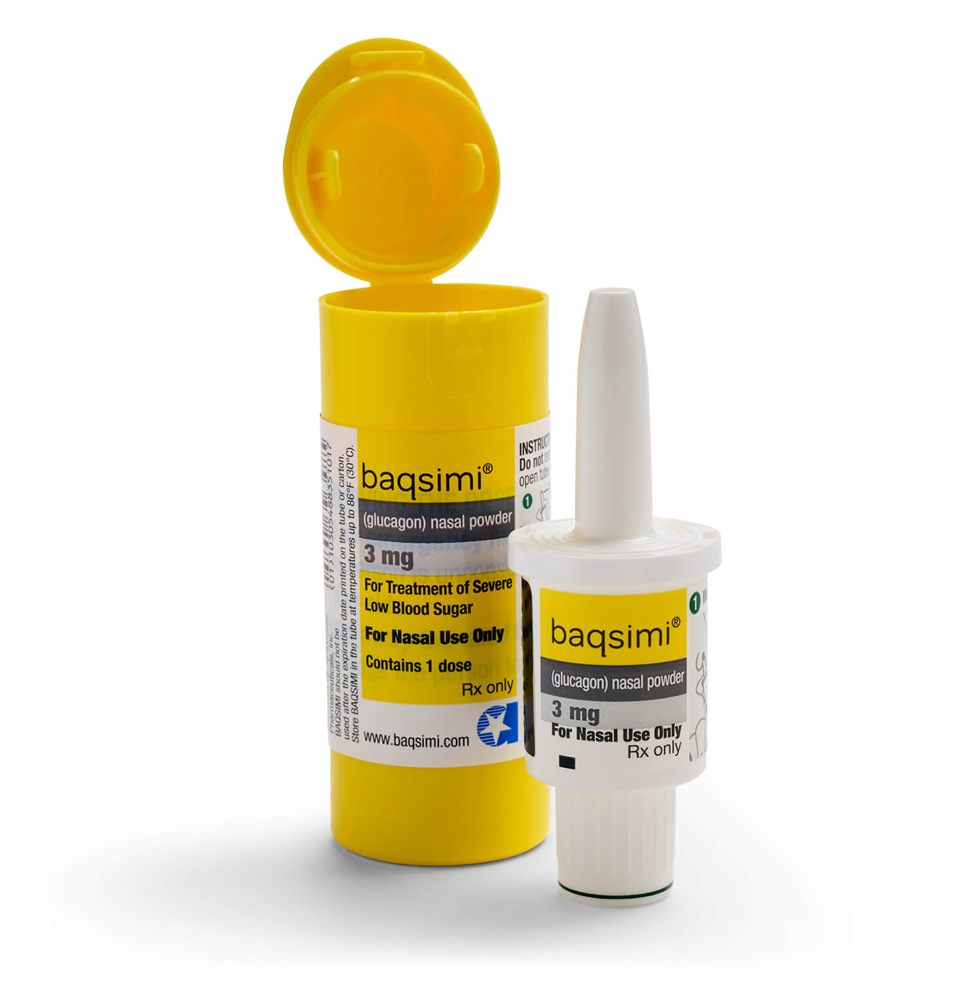

🩸 Matalan verensokerin hoito
Matalalla verensokerilla tarkoitetaan tilannetta, jossa sensorin glukoosi (SG) on liian matala tai on nopeasti laskemassa. Matala verensokeri tulee tunnistaa ja hoitaa nopeasti.
⚠️ Tunnista matala verensokeri
Matala verensokeri voi näkyä esimerkiksi:
- Sensorihälytyksenä
- Poikkeavana käytöksenä tai väsymyksenä
- Vapinana tai hikoiluna
- Nälän tunteena
- Keskittymisvaikeutena
📱 Tarkista sensorin arvo
Tarkista aina:
- Sensorin glukoosi (SG)
- Trendinuoli
- Lapsen vointi

📉 Laskeva trendi
Laskeva trendi kertoo, että verensokeri on menossa alaspäin. Huomioi trendi ennen ruokailua, liikuntaa ja insuliinin vaikutusta.

🍬 Toimintaohje matalassa
- Tarkista sensorin arvo ja trendi.
- Anna nopeasti imeytyvää hiilihydraattia lapsen hoitosuunnitelman mukaan.
- Seuraa sensorin arvoa ja lapsen vointia.
- Anna tarvittaessa lisää hiilihydraattia ohjeiden mukaan.
🍭 Nopeasti imeytyvät hiilihydraatit
Matalan hoitoon käytetään nopeasti imeytyvää hiilihydraattia.
- Glukoositabletit
- Mehu
- Muu lapselle sovittu hiilihydraatti
⏸️ Pumpun pysäytys ja jatkaminen
Pumppu voi pysäyttää insuliinin annostelun automaattisesti, jos se ennakoi matalaa verensokeria.
Tarkista aina sensorin arvo ja lapsen vointi. Insuliinin annostelu jatkuu hoitosuunnitelman mukaisesti, kun tilanne on korjaantunut.
🔄 Matalan jälkeen
Matalan korjaantumisen jälkeen seuraa:
- Nouseeko sensorin glukoosi (SG).
- Mihin suuntaan trendinuoli näyttää.
- Onko lapsen vointi normaali.
- Tarvitaanko lisähiilihydraattia tilanteen mukaan.
🚑 Milloin tarvitaan lisäapua?
Hakeudu lisäavun piiriin lapsen henkilökohtaisen ohjeen mukaan esimerkiksi:
- Lapsi ei pysty syömään tai juomaan.
- Lapsi on tajuton tai kouristelee.
- Matala verensokeri ei korjaannu annetulla hoidolla.
- Lapsen vointi huononee.
💉 Baqsimi
Baqsimi on glukagonivalmiste, jota käytetään vaikeassa hypoglykemiassa, kun lapsi ei pysty ottamaan hiilihydraattia suun kautta.

Noudata aina lapsen henkilökohtaista hätäohjetta.
✅ Muista
- Tunnista matalan verensokerin merkit.
- Tarkista sensorin glukoosi ja trendinuoli.
- Anna nopeasti imeytyvä hiilihydraatti ohjeen mukaan.
- Seuraa tilanteen korjaantumista.
- Älä jätä lasta yksin matalan aikana.